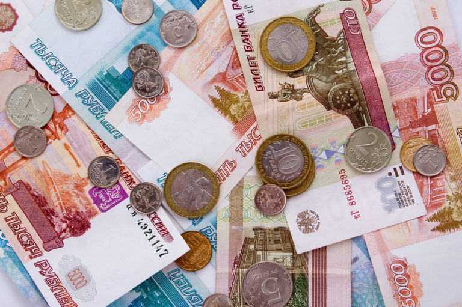

Welcome to
Выплаты и пособия в России в 2020 году: виды и размеры, кому положены и как получить, последние новости
2020.11.24 14:01
Льготы всем Ваш помощник в вопросах соцзащиты Льготы Пособия и выплаты Субсидии Компенсации Материнский капитал Изменения, новости Ипотека, кредиты Использование Условия программы Получение, оформление Обналичивание Региональный Пенсия Оформление пенсии Выплаты и доплаты Накопительная пенсия Обязательное пенсионное страхование Страховая пенсия Пенсионная реформа Государственная пенсия Военная пенсия Меню Льготы Пособия и выплаты Субсидии Компенсации Материнский капитал Пенсия Главная
Социальные выплаты и пособия
Содержание
Что такое государственные социальные выплаты Характерные признаки социальных пособий Федеральные и региональные социальные выплаты Кто может претендовать на пособия Социальные выплаты в РФ Виды пособий в России Порядок оформления социальных выплат В какие органы обращаться для оформления Перечень необходимых документов Размеры и порядок выплат Изменения в 2019 году Мгновенная консультация юриста
Что такое государственные социальные выплаты
Социальная выплата положена гражданам РФ от государства в определенных случаях и предназначена для материальной поддержки конкретного лица или членов его семьи.
Средства выделяются безвозмездно в следующих случаях:
Для частичного или полного возмещения временно утраченного дохода ( пособие по безработице , по случаю временной утраты трудоспособности , по беременности и родам и др.). Оказания финансовой поддержки при росте расходов (помощь по случаю рождения ребенка, на погребение, семьям с детьми до 16 лет, и др.).Социальное пособие служит формой государственного соцобеспечения населения и регламентируется федеральным законодательством.
Характерные признаки социальных пособий
Пособие отличается от других видов социальных платежей тем, что денежные средства перечисляются льготнику напрямую и не зависят от вида соцподдержки или льготной категории заявителя.
Данный вид платежа обладает определенными особенностями:
это всегда государственные денежные выплаты; предоставляется определенным категориям населения в случаях, указанных в законодательных актах РФ ; выплачивается из федерального или регионального бюджета; назначается ежемесячно и выплачивается периодически или единовременно; рассчитывается либо на основе индивидуального заработка, либо устанавливается в твердом размере; имеет целевой характер выделения средств; назначается по принципу нуждаемости заявителя. В случае, когда основания для постоянной поддержки больше нет, выделение денежных средств прекращается.При назначении социальных выплат учитывают следующие факторы:
Факторы
Характеристика
Состояние здоровья или определенные жизненные обстоятельства Болезнь, травма, беременность и др. Особенности ведения быта Нуждаемость в жилплощади Изменения в социальном статусе Увольнение, рождение детей и др. Каждый из приведенных факторов может быть основанием для обращения за поддержкой от государства.
Вам нужна консультация эксперта по этому вопросу? Опишите вашу проблему и наши юристы свяжутся с вами в ближайшее время.
Федеральные и региональные социальные выплаты
Условия назначения федеральных выплат прописаны в федеральном законодательстве РФ . Право на получение средств имеют все указанные в федеральных законах категории льготников, независимо от региона проживания.
Во многих случаях федеральное пособие является существенным дополнением к основному доходу льготника, а иногда и единственным источником средств для жизни.
Федеральные выплаты в России назначаются:
Гражданам, имеющие определенные заслуги перед государством (звание или награды): Герой СССР , РФ , Почетный донор России . Лица, получившие общегосударственный статус: ветераны и инвалиды труда , реабилитированные граждане, работники тыла , безработные и др.Федеральные платежи финансируются из средств федерального бюджета. Деньги выделяются по целевому признаку соответствующим министерствам и ведомствам, которые распределяют бюджет на календарный год.
Региональные платежи устанавливаются в каждом регионе самостоятельно местной администрацией. Выделение средств происходит за счет бюджетов регионов и поэтому могут отличаться величиной или вообще отсутствовать в некоторых областях (крае).
Региональная помощь предназначена лицам, наиболее нуждающимся в дополнительных мерах соцподдержки органов власти. Например, пенсионеры, ветераны труда, граждане, имеющие большой трудовой стаж.Отдельные виды поддержки выплачиваются непосредственно работодателем заявителя. В дальнейшем эти средства компенсируются за счет средств государства.
Кто может претендовать на пособия
Такая социальная выплата предназначена в основном для граждан, которые потеряли трудоспособность или кормильца.
К ним относят лица следующих льготных категорий:
одинокие пенсионеры, неспособные больше трудиться; многодетные семьи , при наличии детей до 18 лет (или до 23 лет — студентов дневного отделения); лица, получившие инвалидность, в том числе дети; дети в возрасте до 18 лет, у которых есть родители-инвалиды или пенсионеры; дети, воспитывающиеся без одного родителя ( отца или матери ); дети-сироты и дети до 18 лет, оставшиеся без родителей; граждане, имеющие государственные знаки отличия (звания, награды); студенты дневного отделения , имеющие детей; лица, ухаживающие за инвалидом 1 группы или ребенком-инвалидом; беременные женщины и находящиеся в декрете; лица, попавшие под сокращение на предприятии. Всем вышеуказанным категориям населения государство гарантирует выделение средств из федерального бюджета. Власти в регионах не могут отменять данные привилегии.Социальные выплаты в РФ
Все социальные выплаты и пособия в РФ можно классифицировать по различным признакам:
Исходя из целевой направленности компенсируют полностью или частично потерю основного дохода; предоставляются как дополнительная помощь2. По продолжительности выделения средств
назначаются единоразово (единовременно); выплачиваются ежемесячное (регулярно); перечисляются один раз в год (выплаты донорам).3. В зависимости от категорий получателей
«детские»; для официально безработных граждан ; для граждан, имеющих работу.Виды пособий в России
В целом можно говорить о трех основных видах соцподдержки от государства:
для граждан, имеющих основную работу; для лиц, имеющих статус официального безработного; для родителей, имеющих детей.Пособие по безработице выплачивается граждан, которые официально зарегистрированы в центре занятости населения. Данный вид выплат назначается временно с целью ускорения трудоустройства граждан и ограничен по времени.
Размер платежей устанавливается индивидуально, государство определило только нижний и верхний пределы выплат. В 2018 году величина выплат составляет 850-4900 руб.Пособие по временной трудоспособности назначается и выплачивается однократно при предъявлении листка нетрудоспособности. Трудоустроенный гражданин может получить деньги, только если работодатель платил взносы в ФСС . Официальным безработным возмещение назначают на бирже труда.
Пособие устанавливается в процентном соотношении к дневному заработку получателя средств. При расчете размера выплат учитывают срок страхового стажа заявителя.Гражданам, воспитывающих детей, начисляется и выплачивается несколько видов господдержки. Их можно объединить в категорию «Детские пособия».
Пособие ПБР выплачивается как трудоустроенным, так и безработным женщинам.
Данный вид социальных выплат назначают также усыновителям детей в возрасте до 3-х месяцев.
Помощь при рождении ребенка может получить один из трудоустроенных родителей. Назначается и выплачивается единоразово и является федеральной выплатой. Размер пособия в 2017 году составляет 16350 руб.
Помощь одиноким матерям назначается женщинам, воспитывающим ребенка без отца (в свидетельстве о рождении ребенка сведения об отце отсутствуют). Помощь могут получать как трудоустроенные, так и безработные матери. Для трудоустроенных величина выплат определяется с учетом оклада, а для безработных рассчитывается на основе МРОТ .
Пособие на погребение выплачивается родственникам усопшего в качестве компенсации расходов на похороны. В 2017 году размер возмещения составляет 5562 руб. Если в регионе, где проживал умерший, установлен районный коэффициент, величина платежа пересчитывается с учетом его размера.
Пособие по инвалидности выплачивается ежемесячно. Размер выплат зависит от установленной группы инвалидности и периодических индексаций.
В 2017 году сумма пособия составляет:
инвалидам 1 группы — 3538,52 руб.; инвалидам 2 группы — 2527,06 руб.; инвалидам 3 группы — 2022,94 руб.Малоимущим семьям предусмотрена региональная поддержка. Она назначается, когда размер дохода на одного члена семьи не превышает величину прожиточного минимума, установленного в регионе.
Помощь многодетным семьям тоже осуществляется региональными властями с учетом финансовых возможностей бюджета области (края).
Некоторые категории льготников могут претендовать на несколько видов социальных выплат. Например, беременные женщины, впоследствии ставшие матерями, имеют право на 2-3 пособия.Порядок оформления социальных выплат
Назначение и выплата пособий происходит через соответствующие государственные органы и учреждения. Поэтому в зависимости от специфики выплаты заявителю потребуется обращаться в различные госорганы для оформления госпомощи.
В какие органы обращаться для оформления
Для получения помощи, в связи с рождением ребенка заявитель должен обратиться: к своему работодателю; в местное Управление Пенсионного фонда; в местный отдел соцзащиты.
2. Для оформления пособий по инвалидности следует подойти в местное Управление соцзащиты.
3. Бюджетные работники могут оформить все необходимые документы в отделах соцзащиты.
4. Отделы Пенсионного Фонда РФ оформляют документы пенсионерам, детям войны , участникам боевых действий , труженикам тыла .
Для ускорения процесса оформления документов лучше обращаться в МФЦ по месту жительства. Специалисты центра помогут оформить справки и рассчитать размер предполагаемых выплат.Перечень необходимых документов
Для оформления права на получение привилегий от государства потребуются следующие документы:
заявление о назначении господдержки; паспорт гражданина РФ ; документы о рождении или смерти (в зависимости от вида платежей); СНИЛС и ИНН ; справка о составе семьи; свидетельство о разводе (при необходимости); документ, подтверждающий совместное проживание заявителя с ребенком (в том числе с ребенком-инвалидом); справка о доходах членов семьи; удостоверения: пенсионера, инвалида, многодетной семьи; документы, подтверждающие опекунство или попечительство; справка о потере трудоспособности. Комплект документов может меняться в зависимости от уровня назначения выплат. Региональные власти могут устанавливать свой перечень документации при установлении региональной помощи.Размеры и порядок выплат
Размеры пособий могут устанавливаться в фиксированном размере или меняться в зависимости от определяющих факторов. Если фиксированный размер не установлен законодательно, то за основу начислений принимается федеральная величина МРОТ .
Региональные власти могут регулировать размер федеральных платежей в сторону увеличения или выплачивать дополнительные региональные денежные средства.
Перечисление средств производится с помощью адресной доставки почтальонами «Почты России» или переводом на счет, открытый в коммерческом банке.
Изменения в 2019 году
В 2017 году государство запланировало повышение размера детских выплат на 5,4%. Для тех пособий, размер которых зависит от МРОТ , установлено повышение с июля 2017 года на 4%. Подобные изменения планируются и в регионах. В 2018 г. с 1 февраля проведена индексация соцпособий в размере 1,025%.
мая 27, 2020 08:53 lgoty-vsem.ruНовости
14 мая 2020Проиндексированы социальные пособия, выплаты, компенсации 12 мая 2020
Проиндексированы социальные выплаты 12 мая 2020
Отменены компенсационные выплаты по уходу за детьми 14 марта 2020
Размер пособия по беременности и родам в 2020 г. 26 января 2020
Установлен прожиточный минимум на 1 квартал 2019 года 26 июня 2019
Правительство РФ решило увеличить выплаты по уходу за детьми от 1,5 до 3 лет 21 мая 2019
С 1 мая 2019 г. пособия по материнству и выплаты лицам, подвергшимся радиации, зачисляются на карту «МИР» 13 мая 2019
С 12 мая вступили в силу новые правила о подаче заявлений на ЕДВ при рождении первого и второго ребенка 16 апреля 2019
Выплаты безработным и детские пособия скоро будут перечислять только на карту «МИР» 06 марта 2019
Заявления о выплатах на первого или второго ребенка можно будет подавать по месту фактического проживания 28 января 2019
С 1 февраля проиндексируют социальные выплаты 06 декабря 2018
Опубликован приказ Минтруда о размерах ПМ за 3 квартал 2018 г. 03 декабря 2018
В 2019 г. появятся новые премии учителям 30 ноября 2018
Изменились размер и порядок расчетов тарифов страхвзносов на ОМС 20 ноября 2018
Впервые за 10 лет увеличится размер пособий по безработице 19 ноября 2018
Максимальный объем пособий по уходу за детьми станет свыше 26.000 руб. 28 октября 2018
Одобрен закон об обеспечении судей жильем 24 октября 2018
Возросли нормы трат на погребение военнослужащих и приравненных к ним сотрудников ведомственных служб 16 октября 2018
Определен ПМ за 3 квартал 2018 г. 16 октября 2018
Комитетом ГД одобрен проект закона о ежегодном повышении МРОТ до уровня ПМ 21 сентября 2018
Утвержден прожиточный минимум для 2-го квартала 2018 г. 21 сентября 2018
В России увеличат на 3 тыс. р. размер пособия для безработных 17 июля 2018
Установлен прожиточный минимум на 1 квартал 2018 г. 23 апреля 2018
В России могут увеличить пособие по уходу за ребенком от 1,5 до 3 лет 18 апреля 2018
Минтруд хочет увеличить пособие по безработице и изменить порядок/условия его выплат 13 марта 2018
Во многие законы РФ в сфере социального обеспечения внесены изменения 02 марта 2018
Скорректированы нормативы ежемесячных издержек на 1 получателя соцпомощи в виде санаторно-курортного лечения 01 марта 2018
Госдума одобрила законопроект об обеспечении прав работников в банкротных процедурах 19 февраля 2018
Сроки предоставления мер соцподдержки 13 февраля 2018
М. Топилин дал поручения в связи с крушением самолета компании «Саратовские авиалинии» 07 февраля 2018
Внесен проект закона о новых выплатах одиноким родителям 31 января 2018
Что ожидает россиян в феврале в соцсфере 15 января 2018
Минтруд и соцразвития разместил информацию о предстоящих изменениях в 2018 г. в соцсфере 15 декабря 2017
Президент РФ высказался по основным социальным вопросам 03 ноября 2017
Пенсионный фонд информирует о запуске нового электронного сервиса 03 ноября 2017
Установлен максимальный размер больничных пособий в 2018 году 31 октября 2017
Увеличится максимальный размер пособия по беременности и родам 27 октября 2017
Бюджет Пенсионного Фонда на 2018 год предполагает рост пенсионных и социальных выплат 24 октября 2017
В 2018 году появится новый вид социальных пенсий Статьи рубрики: Изменение размера взыскиваемых алиментов Оплата больничного инвалиду Освобождение от алиментов Какие положены выплаты при сокращении и увольнении Выплаты юбилярам супружеской жизни Потребительская корзина в России Путинские выплаты при рождении первого ребенка Финансирование детских пособий в 2020 году Критерии нуждаемости Материальная помощь военнослужащим в 2020 году Порядок лишения родительских прав Как заполнить отчет опекуна Выплаты по СНИЛС и ОМС — мошенничество! Доплата к пенсии за инвалидность в 2020 году ЕДВ инвалидам 2 группы в 2020 году Что такое ЕДВ инвалидам 3 группы Что такое ЕДВ инвалидам 1 группы Как подать на алименты вне брака Новые тарифы ОСАГО Индексация детских пособий в 2020 году Как платить алименты ИП? Алименты на жену в декретном отпуске Материальная помощь и НДФЛ Как получить материальную помощь пенсионеру Военные пособия на погребение в 2020 году Льготы и выплаты вдове ветерана боевых действий Пособие по уходу за ребенком-инвалидом в 2020 году Губернаторские 100000 рублей за 3 ребенка в 2020 году Алименты с пенсии по старости в 2020 году Алименты после лишения родительских прав в 2020 году Отпуск по уходу за ребенком до 14 лет в 2020 году Влияет ли повышение МРОТ на зарплату бюджетников Какие выплаты положены родственникам в случае смерти работника Какие выплаты положены военнослужащим при увольнении по окончанию контракта в 2020 году Какие выплаты и пособия предоставляются людям, награжденным государственными наградами Губернаторская премия “Наше Подмосковье” При каком стаже и каких условиях больничный оплачивается 100% Деньги вместо земельного участка многодетным семьям в 2020 году Упрощенная процедура оформления ДТП по ОСАГО в 2020 году Ежемесячные выплаты на первого ребенка в 2020 году в России Стимулирующие выплаты для учителей в 2020 году Стимулирующие выплаты в 2020 году в России Правила и порядок увольнения пенсионера по Трудовому Кодексу Адресная материальная помощь малообеспеченным семьям в 2020 году Губернаторская стипендия в России в 2020 году Материальная помощь в связи тяжелым финансовым положением в 2020 году Денежные пособия и выплаты труженикам тыла в 2020 году Повышенная стипендия за отличную учебу в 2020 году Основные положения приказа Министра обороны РФ 1010 для военнослужащих Ежемесячные страховые выплаты по профзаболеваниям в 2020 году Стипендия для студентов Российской Федерации в 2020 году Стипендия в аспирантуре в 2020 году в России Выплаты и пособия военнослужащим при рождении ребенка в 2020 году Взыскание алиментов с иностранного гражданина в России в 2020 году Что такое потанинская стипендия и как ее получить в 2020 году Правила назначения академической стипендии Стипендия Правительства РФ для студентов в 2020 году Детские пособия в Владимире и Владимирской области в 2020 году Детские пособия в Белгороде и Белгородской области в 2020 году Детские пособия в Благовещенске и Амурской области в 2020 году Детские пособия в Перми и Пермском крае в 2020 году Детские пособия в Карачаево-Черкессии и Черкесске в 2020 году Детские пособия в Ленинградской области в 2020 году Детские пособия в Костроме и Костромской области в 2020 году Детские пособия в Вологде и Вологодской области в 2020 году Детские пособия в Оренбурге и Оренбургской области в 2020 году Детские пособия в Кургане и Курганской области в 2020 году Детские пособия в Биробиджане и Еврейской автономной области в 2020 году Детские пособия в Курске и Курской области в 2020 году Детские пособия в Воронеже и Воронежской области в 2020 году Детские пособия в Кемерово и Кемеровской области в 2020 году Детские пособия в Архангельске и Архангельской области в 2020 году Детские пособия в Кирове и Кировской области в 2020 году Детские пособия в Омске и Омской области в 2020 году Детские пособия в Иваново и Ивановской области в 2020 году Детские пособия в Барнауле и Алтайском крае в 2020 году Детские пособия в Мурманске и Мурманской области в 2020 году Детские пособия в Владивостоке и Приморском крае в 2020 году Детские пособия в Магадане и Магаданской области в 2020 году Детские пособия в Великом Новгороде и Новгородской области в 2020 году Страховые выплаты в 2020 году Прожиточный минимум в областях и регионах России по кварталам Детские пособия в Орле и Орловской области в 2020 году Детские пособия в Рязани и Рязанской области в 2020 году Социальная защита и поддержка в Брянске и Брянской области в 2020 году Социальная защита и поддержка в Белгороде и Белгородской области в 2020 году Могут ли судебные приставы арестовать детское пособие Детские пособия в Ростове-на-Дону и Ростовской области в 2020 году Детские пособия в Республике Карелия и Петрозаводске в 2020 году Детские пособия в Самаре и Самарской области в 2020 году Детские пособия в Тамбове и Тамбовской области в 2020 году Детские пособия в Твери и Тверской области в 2020 году Пособие по бедности в России в 2020 году Детские пособия в Республике Марий Эл и Йошкар-Оле в 2020 году Детские пособия в Республике Коми и Сыктывкаре в 2020 году Детские пособия в Камчатском крае и Петропавловске-Камчатском в 2020 году Детские пособия в Брянске и Брянской области в 2020 году Детские пособия в Калуге и Калужской области в 2020 году Детские пособия в Хабаровске и Хабаровском крае в 2020 году Детские пособия в Томске и Томской области в 2020 году Выплаты и пособия на ребенка по временной регистрации Чернобыльские выплаты по декретному отпуску и уходу за ребенком в 2020 году Страховые выплаты по ОСАГО в 2020 году Пособия и выплаты гражданам и ликвидаторам ЧАЭС в 2020 году Президентская стипендия Российской Федерации для студентов и аспирантов в 2020 году Выплаты по личному страхованию в 2020 году Детские пособия в Республике Чечня и Грозном в 2020 году Детские пособия в Северной Осетии и Владикавказе в 2020 году Детские пособия в Республике Дагестан и Махачкале в 2020 году Детские пособия в Республике Ингушетия и Назрани в 2020 году Детские пособия в Нальчике и Республике Кабардино-Балкария в 2020 году Выплаты по имущественному страхованию в 2020 году Детские пособия в Пскове и Псковской области в 2020 году Детские пособия в Нижнем Новгороде и Нижегородской области в 2020 году Детские пособия в Смоленске и Смоленской области в 2020 году Детские пособия в Сахалинской области и Южно-Сахалинске в 2020 году Детские пособия в Ставрополе и Ставропольском крае в 2020 году Детские пособия в Санкт-Петербурге в 2020 году Детские пособия в Ярославле и Ярославской области в 2020 году Детские пособия в Саратове и Саратовской области в 2020 году Детские пособия в Туле и Тульской области в 2020 году Детские пособия в Чите и Забайкальском крае в 2020 году Детские пособия в Иркутске и Иркутской области в 2020 году Детские пособия в Краснодаре и Краснодарском крае в 2020 году Детские пособия в Уфе и Республике Башкортостан в 2020 году Детские пособия в Республике Калмыкия и Элисте в 2020 году Детские пособия в Ненецком автономном округе и Нарьян-Маре в 2020 году Детские пособия в Республике Адыгея и Майкопе в 2020 году Детские пособия в Пензе и Пензенской области в 2020 году Детские пособия в Ямало-Ненецком автономном округе и Салехарде в 2020 году Детские пособия в республике Мордовия и Саранске в 2020 году Детские пособия в Калининграде и Калининградской области в 2020 году Детские пособия в Республике Тыва и Кызыле в 2020 году Детские пособия в Республике Хакасия и Абакане в 2020 году Детские пособия в Республике Саха (Якутия) и Якутске в 2020 году Детские пособия в Казани и Республике Татарстан в 2020 году Детские пособия в Липецке и Липецкой области в 2020 году Детские пособия в Москве в 2020 году «Лужковские выплаты» молодым семьям при рождении ребенка в Москве в 2020 году Декретные выплаты и пособия по уходу студентам очной формы обучения и в академическом отпуске в 2020 году Декретные выплаты и пособия по уходу за ребенком женщинам ИП в 2020 году Как оформить и получить детские пособия в России в 2020 году Ежемесячное пособие на полноценное питание беременных женщин, детей и кормящих матерей в 2020 году Детские пособия в 2020 году в России Ежемесячное пособие по уходу за ребенком до 1,5 лет в 2020 году Пособие по беременности и родам (декретные выплаты) в 2020 году Отпуск по беременности и родам (декретный отпуск) в 2020 году Детские пособия в Московской области в 2020 году Детские пособия в Ульяновске и Ульяновской области в 2020 году Детские пособия в Севастополе в 2020 году Детские пособия в Республике Крым и Симферополе в 2020 году Детские пособия в Волгограде и Волгоградской области в 2020 году Детские пособия в республике Чувашия и Чебоксарах в 2020 году Все выплаты и пособия при рождении ребенка в России в 2020 году Пособие при постановке на учет на ранних сроках беременности в 2020 году Выплата декретных неработающим в России в 2020 году Минимальный размер оплаты труда в России и регионах в 2020 году Детские пособия после трех лет в 2020 году Детские пособия при рождении третьего ребенка в 2020 году Детские пособия при рождении второго ребенка в 2020 году Выплата пособия по беременности и родам в ФСС в 2020 году Справка о неполучении ежемесячного пособия и неиспользовании отпуска по уходу за ребенком Отпуск по уходу за ребенком и декретные пособия на отца Декретные выплаты и отпуск при срочном трудовом договоре в 2020 году «Громовские выплаты» при рождении ребенка в Москве и Московской области в 2020 году Досрочный выход на работу из отпуска по беременности и родам и уходу за ребенком Отпуск по уходу за ребенком и декретные выплаты на бабушку Как продлить декретный отпуск после 3 лет Детские пособия в Улан-Удэ и Республике Бурятия в 2020 году Детские пособия до 16 лет в 2020 году Ежемесячные пособия на ребенка в 2020 году Детское пособие до 18 лет в 2020 году Детские пособия в Чукотском автономном округе и Анадыре в 2020 году Детские пособия в Челябинске и Челябинской области в 2020 году Детские пособия в Ижевске и Республике Удмуртия в 2020 году Пособие по уходу за ребенком до 3 лет в 2020 году Детские пособия в Екатеринбурге и Свердловской области в 2020 году Детские пособия в Ханты-Мансийске и Ханты-Мансийском АО в 2020 году Детские пособия в Тюмени и Тюменской области в 2020 году Налог на бездетность в России в 2020 году Детские пособия в Новосибирске и Новосибирской области в 2020 году Отпуск перед декретом и после декретного отпуска Единовременное пособие при рождении ребенка в 2020 году Ежемесячные пособия по уходу за ребенком в 2020 году Справка о неполучении единовременного пособия при рождении ребенка Декретный отпуск по уходу за ребенком в 2020 году Детские пособия в Республике Алтай и Горно-Алтайске в 2020 году Детские пособия в Красноярске и Красноярском крае в 2020 году Детские пособия в Астрахани и Астраханской области в 2020 году Второй декретный отпуск и пособия на второго ребенка в 2020 году Все выплаты и пособия для беременных в России в 2020 году Что такое родовой сертификат и для чего он нужен Как получить алименты в браке без развода в 2020 году Алименты на одного, двух и более детей в 2020 году Алименты с матери на ребенка в 2020 году Алименты в России: что это и какие есть виды Алименты на содержание ребенка до трех лет в 2020 году Алименты на детей в России в 2020 году Как получить и использовать родовой сертификат в 2020 году Алименты на ребенка после 18 лет Сколько стоит родовой сертификат в 2020 году Дополнительное ежемесячное материальное обеспечение (ДЕМО) Как и где можно получить подарки по родовому сертификату в 2020 году Куда нужно сдавать родовой сертификат после выписки в 2020 году Как можно выбрать роддом по родовому сертификату в 2020 году Примут ли роженицу в роддом без родового сертификата Пособие по уходу за инвалидом 2 группы в 2020 году Пенсия по инвалидности 3 группы в 2020 году Районные коэффициенты и надбавки по регионам России в 2020 году Пенсия по инвалидности 1 группы в 2020 году Льготы и выплаты пенсионерам старше 80 лет в 2020 году Пособие по уходу за инвалидом 1 группы в 2020 году Пенсия по инвалидности 2 группы в 2020 году Пособие по инвалидности в 2020 году Пособия и выплаты матерям-одиночкам в 2020 году Денежные выплаты и пособия многодетным семьям в 2020 году Материальная помощь и социальные выплаты студентам в 2020 году Выплаты и пособие для первоклассников в 2020 году Социальные похороны за счет государства: кому положены Выходное пособие при увольнении по инвалидности в 2020 году Больничный лист по уходу за ребенком в 2020 году Подъемные выплаты для молодых специалистов в 2020 году Программа “Земский доктор” в 2020 году Государственная программа “Земский фельдшер” в 2020 году Стимулирующие выплаты медработникам и врачам от государства в 2020 году Калькулятор расчета больничного листа в 2020 году Пособия беженцам и вынужденным переселенцам в 2020 году Оплачивается ли больничный в праздничные и выходные дни Особенности и порядок оплаты больничного листа в 2020 году Выплаты выходного пособия при сокращении Социальные выплаты многодетным полицейским для приобретения жилья Подъемное пособие и суточные военнослужащим Единовременная социальная выплата сотрудникам МЧС в России Выплаты работникам при ликвидации предприятия Единовременные и ежемесячные денежные выплаты ветеранам боевых действий Выплаты и компенсации при увольнении по соглашению сторон Денежные выплаты и надбавки к пенсии ветерану труда в 2020 году Страховые выплаты военнослужащим и сотрудникам МВД в 2020 году Выплаты для военнослужащих в 2020 году Оплата больничного листа во время отпуска. Продление отпуска в связи с болезнью Единовременная социальная выплата (ЕСВ) для сотрудников полиции в 2020 году Расшифровка кодов причин нетрудоспособности в больничном листе Оплата больничного после увольнения в 2020 году Можно ли уволиться находясь на больничном Больничный лист после декретного отпуска: оплата, расчет и особенности Как исправить ошибку в больничном листе? Образец для работодателей и медицинских учреждений Инструкция по заполнению больничного листа в 2020 году. Образец заполнения Больничный лист по совместительству. Как оплачивается и оформляется Расчет и размер пособия по безработице в 2020 году Как получить пособие по безработице в 2020 году Постановка на биржу труда в 2020 году. Какие документы нужны, чтобы встать на биржу труда Как получить пособие на погребение в 2020 году Ветераны Боевых действий Ветераны труда Ветераны ВОВ Труженики тыла Военной службы Дети войны Инвалиды 1 группа 2 группа 3 группа Дети-инвалиды Семьи Многодетные Малоимущие Матери-одиночки Отцы-одиночки Молодые Алименты Дети Рождение Дошкольники Сироты Учащиеся Родовой сертификат Работники соцсфер Учителя Врачи Ж/Д Ученые Молодые специалисты Фермеры Военные Военнослужащие МВД МЧС Особые категории Доноры Пенсионеры Беженцы Безработные Опекуны Чернобыльцы Общие вопросы Проезд Лечение Жилье и земли Ипотека и кредиты Рабочие вопросы Соц. карта Погребение ИП и бизнес Авто Потеря кормильца Авторы и эксперты сайта Свежие статьи Выплаты при рождении ребенка в 2021 году Жилищная субсидия "Молодая семья" + маткапитал = бесплатная квартира? Льготы и господдержка в период короновирса Реально ли взыскать алименты с мужа-иностранца? Куда обращаться и как его искать? 7 общероссийских льгот, о которых большинство россиян даже не знает Москва и МО: +7 (499) 288-17-58 СПб и Лен. область: Санкт-Петербург и область: +7 (812) 317-60-16 Россия (горячая линия): 8 (800) 550-34-98 Получить консультацию © 2020 Льготы всем.ру
Ваш помощник в вопросах соцзащиты Льготы Пособия и выплаты Субсидии Эксперты сайта Компенсации Материнский капитал Пенсия Карта сайта +7 (499) 288-17-58 +7 (812) 317-60-16 Получить консультацию Осторожно! Появились сайты маскирующиеся под наш сайт. Мы не просим денег за консультацию. Они бесплатные. Adblock
detector
